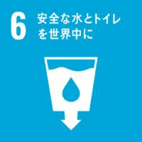
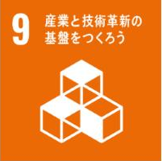
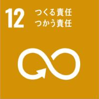

01
排水処理槽の新設
原水の性質や処理条件を確認し、施設に適した排水処理設備をご提案します。計画・設計から施工まで、一貫して対応します。
WATER TECHNOLOGY SINCE 1965
排水処理設備の設計・施工・維持管理を通じて、工場や飲食店、そして陸上養殖という新しい産業の現場を、水の面から支えています。
PHILOSOPHY
水の技術を通じて、産業と環境の共存を支え、持続可能な社会に貢献する
誠実な仕事と確かな技術で、お客様や地域など、関わる人々の信頼に応える
学びと挑戦を重ね、技術を次の世代へつなぐとともに、社員と家族の豊かな生活と幸せを実現する
BUSINESS
NKサントクは、工場や飲食店などから出る排水の性質や、施設ごとの条件に合わせて、排水処理設備の設計・施工から改修、メンテナンスまで対応しています。
設備を新設するだけでなく、既存施設の機能回復や増設、機器の修繕、運転上の課題にも対応。施設を長く安定して使い続けられるよう、現場の状況を確認しながら支援します。
01
原水の性質や処理条件を確認し、施設に適した排水処理設備をご提案します。計画・設計から施工まで、一貫して対応します。
02
処理能力の回復や増強、設備の更新、機器の修繕など、既設施設の状況に応じた工事を行います。
03
公共下水道へ排水する際、水質が基準を超える場合には、排水を基準に適合させるための除害施設が必要です。厨房排水や医療系排水など、排水の種類や施設の条件に応じてご相談に応じます。
04
経験を持つスタッフが現場を確認し、設備の維持管理を支援します。余剰汚泥の削減や省エネルギーなど、運転上の改善提案にも取り組みます。
05
畜産糞尿の処理で得られる液を堆肥製造に活用し、製造過程で発生する臭気を抑えるプロセスです。経済産業省の戦略的基盤技術高度化支援事業に採択された研究開発の成果をもとに、平成23年度に事業化しました。
CASE — LAND-BASED AQUACULTURE
陸上養殖は、陸上の施設に水槽などを設け、水産物を育てる方法です。海洋環境の変化を受けにくく、計画的で安定した生産が期待されることから、食料供給や地域産業を支える取り組みとして注目されています。
養殖事業を続けるには、魚を育てる水の管理だけでなく、施設から出る排水を適切に処理することも欠かせません。NKサントクは、山梨県の陸上養殖施設で、排水設備のメンテナンスを一括して担当しています。
海外製ポンプや配管径の異なる設備が混在する現場では、設備ごとの仕様や状態に応じた対応が求められます。私たちは排水設備の維持管理を通じて、陸上養殖事業を水の面から支えています。

GOAL 6
安全な水とトイレを世界中に
排水を適切に管理し、水環境への負荷を抑える。

GOAL 9
産業と技術革新の基盤をつくろう
設備の維持管理を通じて、新しい産業を支える。

GOAL 12
つくる責任 つかう責任
排水処理で生じる汚泥を、資源として活用する。
CHALLENGE
排水を処理するだけでなく、その先にある資源の活用や、海外の水環境課題にも取り組んできました。
平成21年度
経済産業省・中小企業庁「戦略的基盤技術高度化支援事業」の補正予算プロジェクトとして、企業・大学・県の研究機関・牧場と連携。畜産糞尿の低曝気処理液を堆肥づくりに活用し、臭気を抑える技術を開発しました。
平成23年度
研究成果を事業化し、回分式処理槽の試作機を有償で提供しました。クラリス環境と共同で「液肥の製造方法」の特許も出願しています。
海外への提案
外務省のODA活用可能性調査で、前身の株式会社サントクの設備施工・運転管理の経験が紹介され、ベトナムの水産加工工場や工業団地向けに設備改修・維持管理技術の提供案を検討しました。採択には至りませんでしたが、国内の技術を海外に生かす挑戦でした。
現在
排水処理で発生する汚泥を、地域の農業に役立つ肥料として生かせないか。処理の先にある資源活用の可能性に挑戦しています。
GROUP
NKホールディングスは、中島建工を中核とするグループの持株会社です。
NKサントクは、グループの中で水と排水処理の専門性を担い、汚水・産業廃水処理施設の設計・施工・管理を通じて、産業活動と水環境を支えています。
NKホールディングス株式会社
持株会社
中島建工
総合建設
NK建築コネクト
建設分野の人材育成・支援
NKサントク
水処理・排水処理
COMPANY
| 商号 | NKサントク株式会社 |
|---|---|
| 所在地 | 〒336-0021 埼玉県さいたま市南区別所5-1-17 |
| 電話 / FAX | TEL 048-864-2381 ／ FAX 048-864-2383 |
| 代表者 | 代表取締役 橋口 渡 |
| 創立 | 1965年4月16日 |
| 資本金 | 1,000万円 |
| 株主 | NKホールディングス株式会社 |
| 事業内容 | 総合汚水処理施設の設計・施工・管理、各種産業廃水処理施設、厨房除害処理施設、無臭堆肥製造プロセスの開発 |
| 取引銀行 | 三菱UFJ銀行 浦和支店、武蔵野銀行 武蔵浦和支店、城北信用金庫 西堀支店 |
CONTACT
新設のご計画から、既設設備の不調や水質のお悩みまで、お気軽にご相談ください。